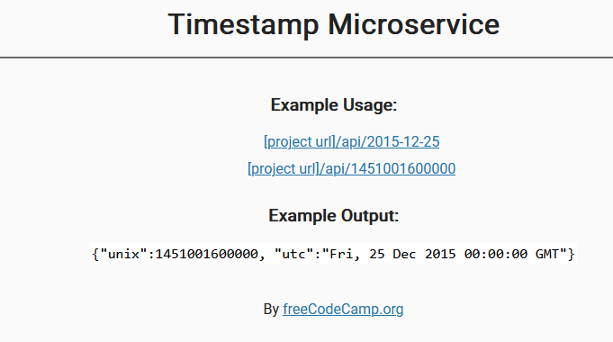
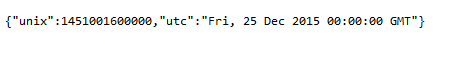
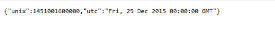
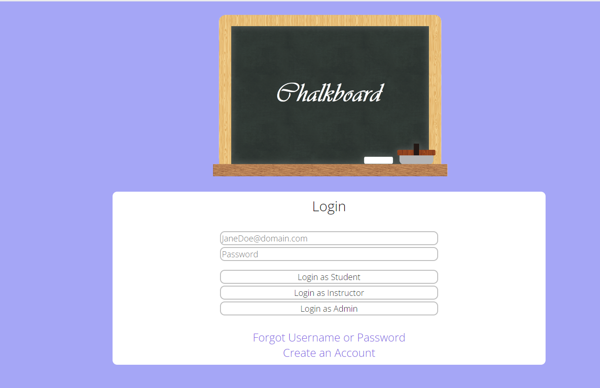

James Ng
IT Support Specialist
Education
Queens College - Queens, NY
Bachelor of Arts
Major in Computer Science.
Certifications
Work Experience
See my complete work history on LinkedIn.
IT Support Specialist
Crystal Window & Door Systems
July 2024 - Present
Online Sales Associate
eBay Inc.
January 2023 - July 2024
- Opening, stocking, and maintaining an independent eBay store with sales to date with 100% positive customer feedback.
- Effectively communicating and negotiating with buyers for best possible outcome and satisfaction.
- Maintaining and supporting the complete process from analyzing and researching what merchandise will provide the most profit at least costs and where to purchase merchandise
Cybersecurity Intern
SIPPA Solutions LLC
June 2022 - July 2022
- System maintenance and backup operation on a daily/weekly basis.
- Operated on system migration to/from cloud.
- Updated previous database to updated version of MySQL 8.0
- Strengthened on technical tasks and documentation under the coach of a technical lead on software development and system administration.
- Audited on research and proposal preparation, increasing presentation performance by 30%.
Social Media Manager
Queens College Student Advocacy & Appeals
July 2021 - August 2021
- Increased customer engagement through social media by 40%.
- Replied and supported customers via private and public messaging with 95% satisfaction rate
- Monitored online presence of company's brand to engage with users and strengthen customer relationships.
- Developed marketing content such as blogs, promotional materials, and advertisements for social media.
Paraprofessional Educator
Asian American Coalition for Education
June 2015 - August 2015
- Abet in education for efficient learning and ensure completion of tasks and strengthen performance in study
- Assisted the lead instructor in administrating and mentoring essential homeroom demeanor
- Cooperated with fellow co-workers to assimilate unique exercises to augment and complement academic, emotional and environmental development of students
Environmental Preservationist
Queens Historical Society
May 2014 - June 2014
- Established exceptional customer service
- Provided provisions to local businesses to team in order to improve use of time and create dependable partnerships
- Disinfected and decontaminated waste to preserve and enhance local cleanliness
Featured Projects
View selected projects below. More information can be found at my GitHub!
Check out my Weather Application!
The Weather Application that uses an API to ask the user for their latitude and longitude to accurately display weather details. The degrees displayed is in Celsius.
Check out my Timestamp Microservice
   Timestamp Microservice
This project is a full stack JavaScript application that uses an API that retrieves a certain date and outputs JSON objects with a Unix key.
Check out my Chalkboard Website
 Chalkboard
This project is a altered version of CUNY's Blackboard system. Essentially it is an academic website that displays information based on who has logged in. For example if a student logs in, they would only see their classes. If a professor logs in, they would have an overview of their students and a special view of their class. The login information is all based on SQL.